兩百字內的個人簡介
畢業於資訊工程學系，畢業後一直都在資訊行業工作。
目前是在一間廣告公司擔任資訊工程師，主要負責撰寫 Landing Page、埋設 Google Ads、FB pixel 等廣告追蹤碼，以及透過 Google App Script 撰寫自動化流程。
曾參與老師的 Boostcamp，雖然當時並非尋找工作需求，僅參與至第二階段。此次期望能完整參與訓練，並成功找到新的職業發展機會。
為了成為軟體工程師，做過什麼努力？若有具體作品請分享給我們
在職場中，由於缺乏討論對象，主要透過自主研究，盡可能去找到還有哪些能做的，但我覺得很幸運的地方是能夠在工作中實踐。
前期的作品如下 作品一。
中期引入了 Tailwind CSS 並加入動畫效果，作品二 以及 作品三 ，也有使用gulp實現檔案或圖片等的壓縮及 Tailwind CSS 的轉譯。
近期嘗試透過 WordPress 去建立網站，撰寫 PHP 自行開發佈景主題，作品四。
如果參與這個訓練，會怎麼安排學習時間？
由於計劃全職投入轉職，目前有一個明確的學習時間表。早上，計劃保持良好的運動習慣，並在這段時間補充相關所需的知識，透過觀看線上課程和閱讀相關文章。同時，我會花約一個半小時健身運動。
在下午時段，專注於實際的程式撰寫，並且整理學習筆記，確保所學的知識能夠實際應用。
晚上的學習時間，將用來加強自己的英文能力，或是瀏覽一些面試題庫，了解Behavioral Interview的技巧和方法。
是否有想要加入的公司？為什麼想加入該公司？
目前對 iKala 以及 漸強實驗室 Crescendo Lab Ltd. 有興趣。
對於將AI應用到產品中以及怎麼串接多個平台來實踐數位整合行銷相關的領域感到有趣。

請描述一件產生明顯負面情緒的經歷，如何處理該情緒？
去年底我開始計畫離職，對於這個決定感到相當不安。一方面我意識到在目前公司所學到的技術與業界專業工程領域的差距，讓我感到不安。另一方面我擔心即使找到新工作，依據目前的能力可能只能獲得最多5萬的薪水，這與現在的薪資相比讓我感到害怕。然而我明白不去採取行動一切都不會有改變。
因此我給自己一段時間，持續搜尋相關的資訊。這樣的努力使我發現，隨著時間推移，答案似乎慢慢靠近，我的職涯目標也漸漸變得更加明確。我深知當面臨不確定的情況時，不應該急躁，而是要給自己耐心。這不代表我在這段時間內讓自己放空或放棄，而是給予自己時間，持續穩定地搜尋相關解答，相信答案會逐漸浮現。這樣的信念讓我能夠在不確定性中保持冷靜，並繼續為自己的未來積極尋找方向。
關於這份申請網頁，分享一個開發時的技術心得。
之前因為知道 CSS Grid 的支援度比較低，因此在開發中一直使用 Flex 進行排版。這次嘗試使用 Grid 進行開發，雖然僅在排版的一小部分使用到，但在這次的嘗試中，了解到 Grid 相較於 Flex 的優勢。
我們發現，Grid 的一項明顯優勢是在處理 item 之間的間距上，透過 gap 的使用更加方便實現。另外當需要進行不規則排版時，Grid 相較於 Flex 提供了更為方便的方法。
請用簡短兩三句話，描述對你而言，最重要｀的一項人際交往原則。
每個人的生長背景及經歷都不同，對於不同的想法給予理解及尊重。
從上次提出申請至今，多做了哪些努力？( 第一次申請不用回答 )
從上次結束至今還是有不定期的參加一些線上課程，如六角的切版直播班等。
在參與完 WeHelp 後，我開始嘗試在工作中運用 Gulp 建構自動化工作流程。最近我也嘗試使用 WordPress 架設網站，並且親自撰寫 PHP 的佈景主題，而非使用別人事先編寫好的佈景主題。這個過程中，我深入了解了 Validating、sanitizing、escaping 以及 Hook 的概念。
我發現自己仍然對程式撰寫充滿熱情，儘管進展可能相對緩慢。這段時間的學習經驗讓我更深入地了解了網站開發的重要概念，並讓我能夠更靈活地應用這些技術於實際工作中。
其他想要對我們說的事情？
老師在每次 Boostcamp 中的技術堆疊都越來越豐富，這讓我感到非常開心。在外面很難找到如此完整的內容，尤其要在短短的 6 個月內學完這麼多東西確實相當具挑戰性。或許只能碰到基礎，但我很想要透過這次機會會多多提問，至少對這些新知識有一定的基礎。
另外不知道老師能不能在這次的 Bootcamp 中也增加如何透過 AI 來協助工程師開發或協作的議題。這類議題對未來工程師來說是必經之路，如果提早知道如何應用，應該是很大的優勢，感謝老師。